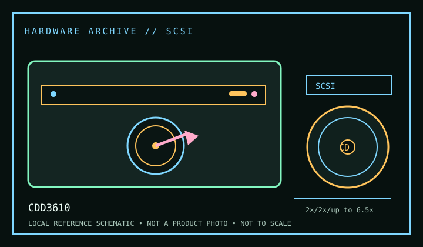

[ CD-R AND CD-RW DRIVES // IDENTIFIED MODEL ]
Philips CDD3610
Early SCSI CD-Recordable/ReWritable mechanism with 2× CD-R writing, 2× CD-RW rewriting and up-to-6.5× CD-ROM read. Its SCSI interface is a key distinction; do not use IDE/ATAPI setup guidance.

IDENTIFICATION: Confirm the manufacturer label, complete model suffix, interface and firmware revision against the cited manual before installation or archival use. Ratings are maximums; actual performance depends on media, mode, host and software.
Documented specifications
| Subcategory | CD-R and CD-RW drives |
|---|---|
| Exact model | CDD3610 |
| CD-R write | 2× |
| CD-RW rewrite | 2× |
| CD-ROM / CD read | up to 6.5× |
| Recorded/read formats | CD-R and CD-RW recording; CD-ROM read. Manual-listed audio/data compact-disc formats and packet-written media require compatible reader/authoring software. CD-UDF/packet access is host-software dependent, not a firmware-only feature. |
| Recording modes | Early-generation CD-R/RW modes and incremental packet writing are documented for the family; supported mode/media combinations are narrow compared with later writers. Follow the exact manual and verify completed discs in an independent reader. |
| Interface / mechanics | SCSI (internal drive); check the exact rear connector, SCSI ID and termination. A compatible SCSI host adapter and properly terminated chain are required. Unit/bundle configurations may vary. |
| Host and operating-system compatibility | Use a compatible SCSI adapter/driver, correctly set SCSI ID and termination, plus period authoring/packet software. Modern SCSI bridges may provide reads but can omit recorder command passthrough; legacy OS compatibility belongs to the adapter and software as well as the drive. |
| Firmware / revision notes | Confirm the service-manual revision and firmware label before maintenance. Do not assume another CDD36xx model shares firmware. With older media and hardware, test write/erase cycles and preserve a log rather than relying on nominal maximum rates. |
Compatibility & preservation notes
- Use a compatible SCSI adapter/driver, correctly set SCSI ID and termination, plus period authoring/packet software. Modern SCSI bridges may provide reads but can omit recorder command passthrough; legacy OS compatibility belongs to the adapter and software as well as the drive.
- Confirm the service-manual revision and firmware label before maintenance. Do not assume another CDD36xx model shares firmware. With older media and hardware, test write/erase cycles and preserve a log rather than relying on nominal maximum rates.
- For an imaging or recording session, log the exact drive and firmware, interface/controller, operating system, application version, media identifier, selected mode and any read/verification errors. Keep checksummed image copies and logs.
- Handle discs at the edge or center hole and store in cases in a cool, dry place away from direct sunlight. Avoid adhesive labels, abrasive cleaning and undocumented solvents or polishing.
Read support is not write support. A format listed for this drive does not guarantee every disc revision or copy-protection scheme will work.
Sources
- Philips CDD3610 service manual (1997), Bitsavers/Internet ArchiveArchived scanned service manual for CDD3610; source for mechanism, interfaces and service details.
- Philips CDD3610 user manual, ManualsLib archiveArchived operation manual; consult exact speed/format and connection tables.
- Library of Congress — CD-R and DVD-R/RW longevityPreservation guidance for recordable media.